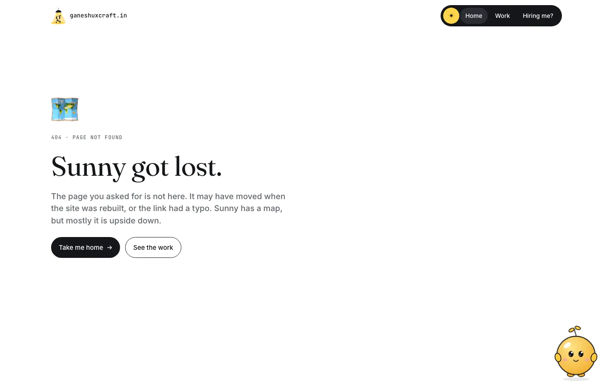
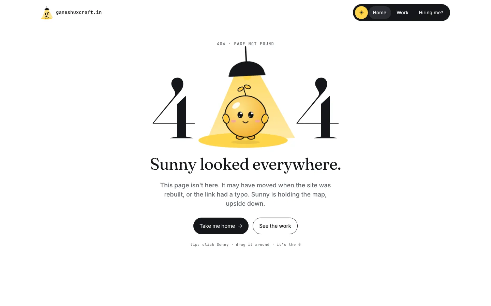

01
The setup
Three tools, one loop.
01 · Design in Figma
Structure, spacing, hierarchy and visual direction.
02 · Build with Claude Code
Turn the design into a working site, and iterate in the browser.
03 · Review, then upload
Review, fix what doesn’t work, then commit and publish to GitHub Pages.
02
AI draft, my final
Left is Claude’s first pass, right is what shipped.


Homepage
The first pass had the structure. I refined the typography, spacing and visual rhythm to make it feel like my portfolio.


404 page
The first direction was functional. I simplified the composition and brought it back into the visual language of the site.
Both pairs are real commits from the same repository, before and after. The case-study pages aren’t shown here because the AI drafts for them were never saved as images.
03
The timeline
From the first upload to today, by day.
- Nov 13
First upload
The site goes live on GitHub Pages with a custom domain. HTML, CSS and JavaScript, no framework, no build step.
- Nov 14
Sunny learns to act
The mascot gets its acts, emotions and synthesised sound cues, and starts greeting visitors.
- Nov 15
Seven case studies
Reports, Brand configuration, Outbound and Feedback join Zobot, then the design system and the Operator Console.
- Nov 16
The pendant mark
The lamp becomes the logo and favicon, the Figma v2 page is applied, and the theme switch moves to the new pill.
- Nov 17–18
Review pass
Accessibility fixes, a WebP gallery with a lightbox, the resume PDF, and the component inspector with Figma counterparts.
- Nov 19
The interactive layer
Career map, hiring page and printable resume, keyboard shortcuts, Sunny’s reactions, a collage gallery, the 404 and more.
04
What is in the box
The parts that took the most rounds.
Curious about the code?
It’s all in the page source: no bundler, no framework. View source on any page, or ask Sunny.